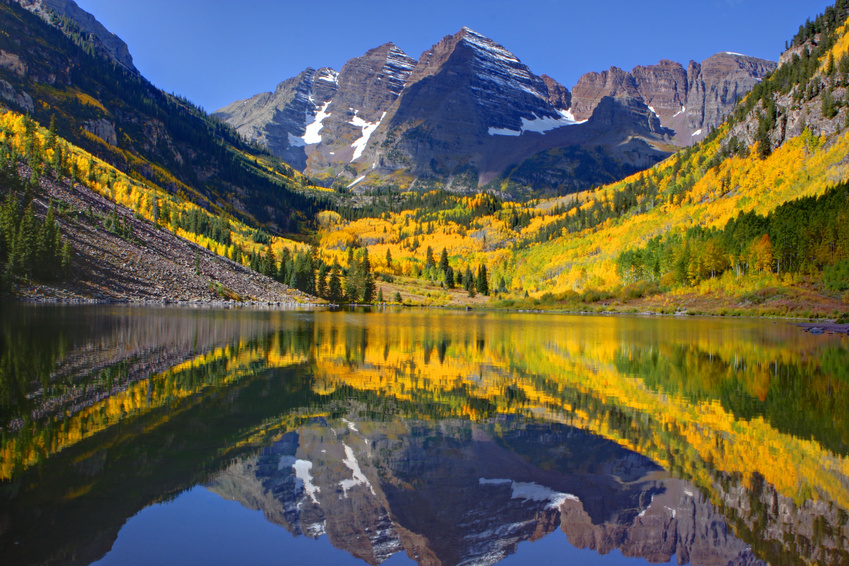
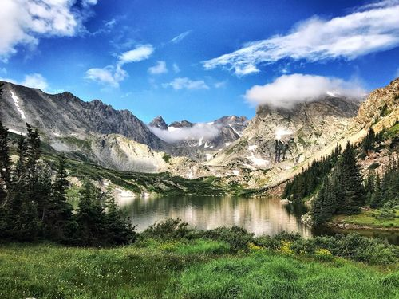

Colorado is known for it's diverse hiking experience. There are trails from expert to beginner, with a range of beautiful views and elevations. With over 17,000 trails to explore, what are you waiting for, go take a hike.
Start at the outlet of Maroon Lake and travel along Maroon Creek to encounter alpine meadows, aspen forests and rocky slopes. This 3.2-mile one-way trail is an excellent place to spot wildlife such as mule deer, red fox, bighorn sheep, porcupines and a variety of birds.
Saint Mary's Glacier is a 2.4 mile heavily trafficked out and back trail located near Idaho Springs, Colorado that features a lake and is rated as moderate. The trail offers a number of activity options and is best used from April until October. Dogs are also able to use this trail but must be kept on leash.
Lake Isabelle via Pawnee Pass Trail is a 5.5 mile heavily trafficked out and back trail located near Ward, Colorado that features a waterfall and is rated as moderate. The trail is primarily used for hiking and is best used from June until October. Dogs are also able to use this trail but must be kept on leash.